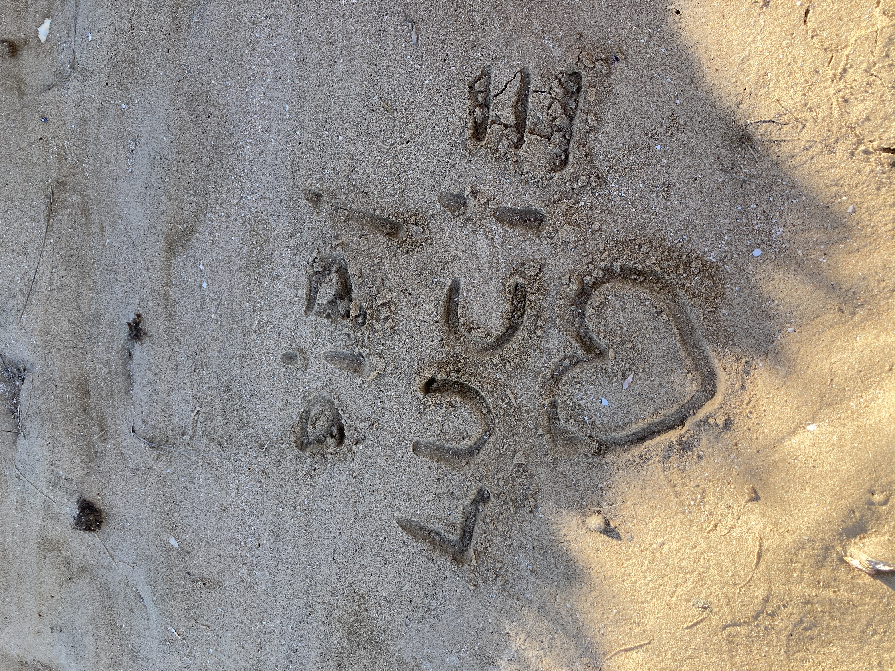
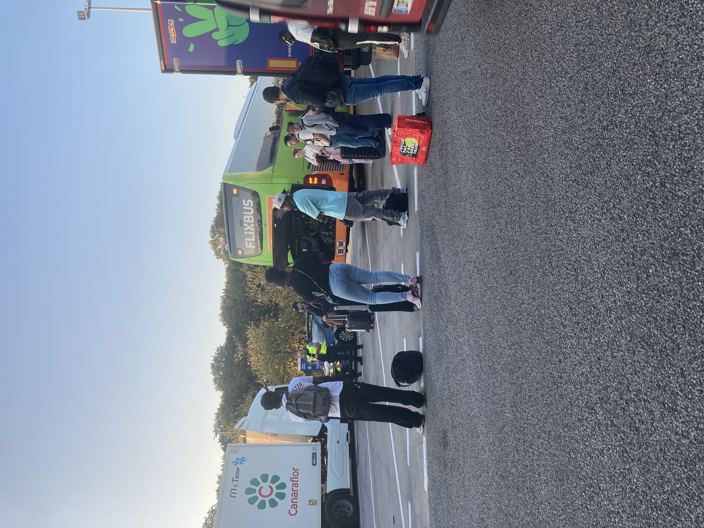

Comme ta boîte au lettre fait disparaître le courrier, je te fais une nouvelle lettre (qui est une reconstitution archéologique de ma mémoire de la première) qui arrivera forcément à destination :-)
Ma chère lulu, je profite de la panne de mon flixbus au beau milieu des Yvelines pour t'écrire. Je voulais te remercier pour ces 2 belles journées aux Sables. Cette ville, et cette maison, sont des endroits dans lesquels je me sens apaisé. On y mange bien, la vie est douce et les paysages sont beaux, mais surtout tu es là et ça me remplit de joie. Les choses que tu dis et que tu penses font de toi une personne très inspirante. Tu me fais aussi beaucoup rire, mais ça je pense que tu étais déjà au courant. J'espère que tu iras vite mieux, et qu'on s'habituera aussi vite à mon nouveau rythme !
Je t'aime
imoOoOoOo
En même temps j'avais pris deux cartes à l'Île Penotte mais j'avais mis qu'un euro c'est ptet pour ça...

********

Lettre originale écrite le 4 octobre, vers 19 heures, sous vraie panne